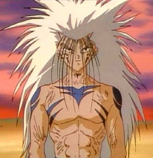

Forums galactiques > Taverne galactique : lieu de discussion informel > La mort d'Hunta, réjouissance ou malheur ?
Je m'en réjouis, superbe, les démons sont partis ! | 26 | |
Je pleure, bouhouhou, pauvre Hunta. | 12 | |
Total : 38 vote(s) | ||
Pages : 1 2
| Général_Louis Réputation à la taverne : 1323  06/07 ETU 19:08 | Score : 0 Détails "Bonjour à tous, je viens de voir que Victa est mort. Alors, seriez-vous plutôt du genre à faire la fête ou bien à pleurer sur sa tombe ? C'est ce que ce sondage va nous démontrer !
A ma droite il y a la salle des fêtes pour ceux voulant faire la fête, boissons à volonté et coktail gratuit. A ma gauche il y a la salle pour pleurer, venez pleurer sur le sort de Victa pour 1 leems par minute. Sur-ce, bon vote ! Et pour ceux venant faire la fête, il y a les meilleurs DJ du moment dans la salle des fêtes !" | ||
| KiaX Réputation à la taverne : 178  06/07 ETU 19:11 | Score : 5 Détails Snif ... Victa est mort ! Snif ! Maitenant que vont devenir mes Bombes ?
Ou vais-je envoyer mes troupes assoifé de combats ? Snif victa non !! Mais finalement je vais a droite ... pour les cocktails bien sur ? | ||
| Le Clan Yzocras Réputation à la taverne : 969  06/07 ETU 19:11 | Score : 4 Détails ?
| ||
| Galeon Réputation à la taverne : 569  06/07 ETU 19:14 | Score : 4 Détails Je veux bien faire la fête, parce que bon, la fête c'est cool, mais en même temps, se réjouir de la mort de quelqu'un est quelque peu déplacé je trouve.
| ||
| Exodus Réputation à la taverne : 238  06/07 ETU 19:16 | Score : 0 Détails Musique pour la fête: http://www.radioblogclub.fr/open/146728/america/James%20Brown%20-%20Living%20in%20America
Je vais à gauche !! Exodus attrapa son garde du corps T'es fou mon gars, à droite c'est la fête ! Ouais vive la fête !! DJ met cette musique ! | ||
| demon de minuit Réputation à la taverne : 23  06/07 ETU 19:22 | Score : 1 Détails J ai perdu quelqu un de ma famille.
Mais il reste moi tout de meme. | ||
| tuningman27 Réputation à la taverne : -43  06/07 ETU 19:29 | Score : 1 Détails Ce n est peut etre pas le meilleur argument.
| ||
| Le barbare Réputation à la taverne : 428  06/07 ETU 19:34  | Score : 2 Détails Ujio était là sur sa planète natal quand il avait entendu le bruit qui courant la mort d'hunta...
Il dit à son général qui était à coté de lui: " Ce soir débouchés nos meilleurs alcool pour nos soldats... Nous fetons la mort d'un commandant à l'intelligence surdimentionné ^^ " | ||
| Krynn Réputation à la taverne : 47  06/07 ETU 21:06 | Score : 5 Détails Voilà une question étrange...
Pleurer ou faire la fête lors de l'annonce de la mort d'un homme ? Pleurer, c'est bien pour les amis plus ou moins chers. Se réjouir, c'est pour les ennemis (quoique je me demande ce que deviens le respect ici, mais passons) Mais n'y a-t-il pas une autre alternative que ces deux là ? | ||
| Mathilda Hanna Réputation à la taverne : 1228  06/07 ETU 21:10 | Score : 6 Détails Bien sûr, chère Krynn... il reste toujours l'indifférence!
Ou la volonté de laisser un commandant partir dans la paix, sans moquerie ou autre! Avec le minimum de respect qui lui est du! Pour moi, ce ne sera ni à gauche ni à droite... juste un demi-tour vers la sortie! --- n'a pas voté! | ||
| Naruse Réputation à la taverne : 1178  06/07 ETU 21:39 | Score : 3 Détails Certains sont doués pour créer des choses inutiles... certains plus que d'autres.
| ||
| computer Réputation à la taverne : 64  06/07 ETU 22:32 | Score : 1 Détails Je ne l'ai pas connu donc je ne peux pas dire qu'il est mon ennemi ou mon ami mais il y a quelque chose que tout le monde devrait comprendre c'et de respecter son égaux même si il est robot, humain, animal ou démon ou ange.
Je n'ai pas voté moi non plus | ||
| Dark Ezeckiel Réputation à la taverne : 776  06/07 ETU 22:52 | Score : 10 Détails Jingle!
Dans l'Espéranceuh,Terrib'Espéranceuh, L'démon-boulet est mort ce soiiiir Awimbowé-Awimbowé-Awimbowé Dans l'Espéranceuh,Terrib'Espéranceuh, L'démon-boulet est mort ce soiiiir En ce jour bénni,le jour des créatures de l'ombre ne sera donc plus souillé par cet individu et ses sbires,une bande de démons d'ordre inférieurs... Oui,car,contrairement à eux,les démons véritables sont de forme humaine,et je n'ose dire quel déshonneur pour les soldats des limbes ce fut de voir cette piétailles se permettre de se faire traiter de la même manière que les généraux des bataillons de la Géhenne... Hunta est mort,l'honneur est lavé! Moi puéril? Nan,juste sarcastique! | ||
| Général_Louis Réputation à la taverne : 1323 07/07 ETU 10:31 | Score : 1 Détails "Très bien. Faisons tous la fête alors ! Réjouissons-nous tous ensemble ! Le vilain petit démon est mort, victoire ! Mais, ne s'est-il pas réintégré dans des pinguins ? Je crois bien que oui hélas..."
HRP: Victa, pas la peine de moinsser car je t'avais reconnu. Pas doué pour les réapparitions hein ? Petit Les_Pingouins_Verts va. :P :HRP | ||
| Le barbare Réputation à la taverne : 428 07/07 ETU 10:32 | Score : 2 Détails Le respect pour quelqu'un qui tue... Fais la paix... Et tue encore...
Désolé je ne peux pas en avoir... | ||
| Les_pingouins_verts Réputation à la taverne : 82  07/07 ETU 10:44 | Score : 1 Détails Les pingouins regarda le jeune homme
Et il te manque un boulon ou une case à toi,hahha nous des rincarnations de démons. HAHAHAHA,on a trouver un comique les gars. Hrp: Bon je commence sérieux en avoir marre. Je suis ici pour faire du rp ,alors tu va arrêter de m'harceler hrp. D'accord je t'ai arnaquer étant "KOKO" mais celà était du jeu et il ne faut pas confondre jeu et irl. Hunta faisait des efforts lui. Ce que je viens de lire sur le forum de la coalition ne me plais pas beaucoup. Je commence sérieux en avoir marre que tu cherche par tout les moyens à me démolir hrp pour juste un peu d'argent volés par un de mes persos. Louis est tu un gamin?Je le crois certes... Car tu compare hrp et rp,je ne sais pas ce que je t'ai fait hrp mais là ,j'en ai marre de marre. Donc une fois pour toutes ,où tu me laisse faire du rp et tu arrete de vouloir me démolir hrp pour une cause rp. Et tu demandera à tes potes exodus et barbare de se calmer ou je fais intervenir dieu. Donc une fois pour toute,on est ici pour faire du rp(role player=tout ce qui concerne un rôle dans un jeu et pas un rôle dans la vie réelle) | ||
| Le barbare Réputation à la taverne : 428 07/07 ETU 10:51 | Score : 2 Détails J'aime pas le vert ^^ Bon qui me paye un café? Louis?
Hrp: Franchement JS1boys j'ai essayé de te faire confiance en G0 pour que tu devienne un joueur réspécté car là-bas ils ont qu'une envie c'est te démolire rp bien sur... A chaque fois que tu fais un rp la-bas tu viens tu rptiste normal et tu kasse tout et ionisant plein de systèmes ou attaquant tout le monde... Sa devient lourd... Et en G2 c'est pareil... Tu es simpa tu fais de bon rp et du jours au lendemain tu deviens fou et attaque tout le monde... Fais un rp simpa et garde le mais arrètes ces rp de merde que d'attaquer tout le monde... Si tu veux être méchant fais un rp de méchant mais arrète de passer comme cela de l'un à l'autre car tu va finir par te faire détéster de tout le monde et à chaque fois qu'on parle de toi c'est rarement pour dire que tu es un bon rptiste ! Grandit dans tes rp et je pense que tout ira bien ! | ||
| Les_pingouins_verts Réputation à la taverne : 82 07/07 ETU 10:55 | Score : 0 Détails
Apprenez la différence entre rp et Hrp. Et tout ira bien,je suis ici pour faire du rp. Je m'excuse pour ce qu'a fait koko à louis ,mais ce n'est qu'un personnage de jeux. Apocalypsis est un jeux,alors ne confondait pas irl et rp. J'ai toujours était sympa irl,et je commence sérieux en avoir marre qu'on me cherche des probléme pour du rp. Si tu veux continuer ce hrp ,merci de me parler en mp. Je suis un bon rpiste,je ne gardes juste pas les même roles pour pouvoir essayer plusieurs choses. Toute facon la qualitée d'un bon rpiste est de ne pas confondre irl et rp. Apres on est pas tous obliger de s'aimer,mais il ne faut pas que sa en devienne une affaire hrp. | ||
| demon de minuit Réputation à la taverne : 23 07/07 ETU 11:01 | Score : 4 Détails Une ombre aparrut dans la salle c etait demon de minuit.
Il arriva devant la dispute et leur dit: "Aujourd hui je vais emmener hunta dans mon humble deumeur et je vais l enterrer en enfer pour qu il repose en paix dans son pays alors silvouplait un peu de respect envers les morts merci." Et il repartit en dispaissant en ombre avec le corps de hunta. | ||
| Exodus Réputation à la taverne : 238 07/07 ETU 11:06 | Score : 0 Détails Gwaaa ?
Personne me parle OUIIIIN hrp: Js1boys... "HRP://Merci de ces heures de jeux,je désactiverais bientôt ce compte et je reviendrais "peut être" un jour,je me suis à vrai dire lasser de ce jeu et je n'arrive plus à penser depuis quelques temps à cause de l'opération qu'a subit ma soeur." Tu dis que tu pars pour ta soeurette, et tu reviens quelques minutes après... |
Pages : 1 2
Forums galactiques > Taverne galactique : lieu de discussion informel > La mort d'Hunta, réjouissance ou malheur ?